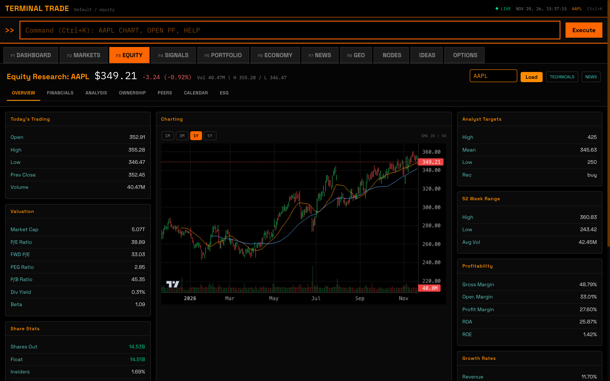

Terminal Trade
apps
Local market research terminal built with Next.js. Free public data plus optional keys in .env.local.
Terminal Trade
Local market research terminal built with Next.js.
Run on your machine only. No hosted deploy. Free public data plus optional keys in .env.local. Not investment advice.

Screens
| Key | Desk | What you get |
|---|---|---|
| F1 | Dashboard | Indices, FX, commodities, pulse, quote, news |
| F2 | Markets | OHLCV candles, watchlist tape, relative, correlation |
| F3 | Equity | Research workbench, financials, ownership, ESG |
| F4 | Signals | Rule-based detectors with chart markers |
| F5 | Portfolio | Paper blotter, heatmap, NAV, sectors, risk |
| F6 | Economy | FRED macro series |
| F7 | News | RSS monitor |
| F8 | Geo | Macro risk proxies, Yahoo corr, GDELT headlines |
| - | Nodes | Correlation workflow canvas |
| - | Ideas | Rules-based screener helper |
| - | Options | Deribit crypto chain or Yahoo equity chain |



Data sources
| Source | Used for |
|---|---|
| Yahoo Finance | Equities quotes, OHLCV, fundamentals, equity options |
| CoinGecko Demo | Crypto market tape |
| Coinbase Exchange | Crypto daily candles |
| FRED | Economy series |
| GDELT DOC API | Geopolitics headlines |
| Deribit | BTC and ETH options |
| alternative.me | Fear and Greed |
| UN Comtrade | US trade partners |
Optional keys (see .env.example): FRED_API_KEY, FINNHUB_API_KEY, COINGECKO_DEMO_API_KEY.
Quick start (local)
pnpm install
cp .env.example .env.local # optional keys for FRED / Finnhub / CoinGecko
pnpm devKeep API keys in .env.local on your machine. Do not put them on a public host.
Command examples: AAPL EQ, MKT, ECO, NWS, BTC, HELP.
API surface
Primary routes live under /api/v1:
GET/POST /api/v1/equity/quoteGET /api/v1/equity/price/historicalGET /api/v1/markets/panelGET /api/v1/crypto/marketsGET /api/v1/equity/overviewand related research routesGET /api/v1/economy/fred/seriesGET /api/v1/technicals/signalsGET /api/v1/newsGET /api/v1/geopolitics/overviewGET /api/options/chain
Layout
src/app/api/v1/ HTTP routers
src/lib/platform/ providers, cache, envelopes
src/lib/data/ Yahoo, CoinGecko, Coinbase, news, Comtrade
src/components/ desk UI
public/brand/ logo, favicon, cover, backdropLicense
MIT. Research and education only.
Links
| Repo | github.com/letrinhandn/Terminal-Trade |
| Demo | terminal-trade-iota.vercel.app |
| README | README |
Source: project README + screenshots from the repo.